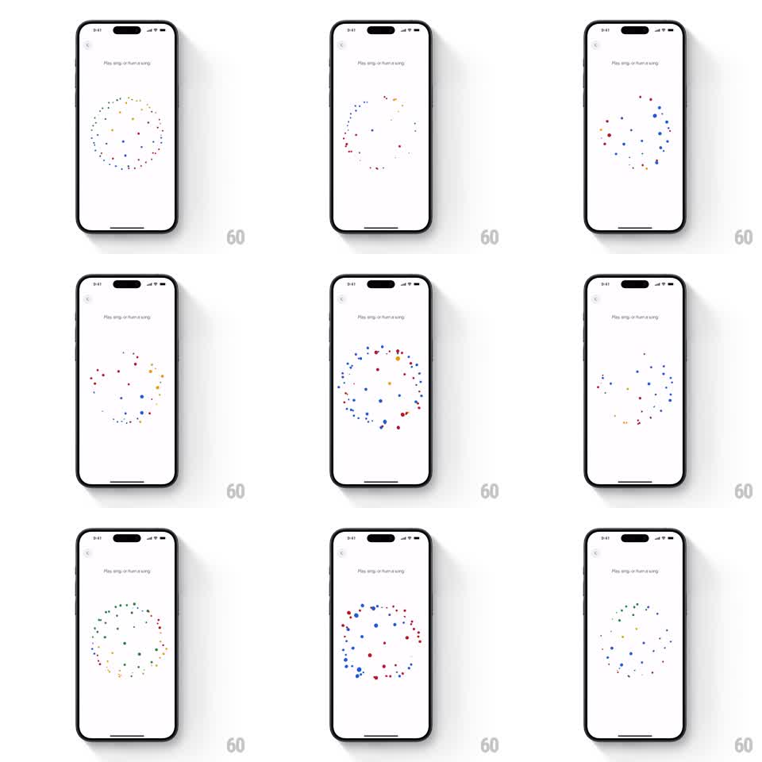

Media
Frame-by-frame

Rebuild this animation 1:1: Google's "find a song" listening screen - a ring of small multicolored particles at center expands, contracts, and reshapes into scattered constellations in sync with audio input while the user hums.

Rebuild this animation 1:1: Google's "find a song" listening screen - a ring of small multicolored particles at center expands, contracts, and reshapes into scattered constellations in sync with audio input while the user hums. ## Integration Integration: stack-agnostic spec - springs given as stiffness/damping, timed motions as duration + curve; map every value to your framework and animation library of choice. ## Scene White screen, small header line "Play, sing, or hum a song...", close button top-left. Center: a circular arrangement of ~40-60 dots in Google colors (blue, red, yellow, green). ## Motion spec Pattern: audio-reactive particle field. - Rest: particles form a clean double-ring circle, gentle breathing (radius +/-5%, ~2s loop). - Listening: particles scatter outward into loose clusters (each dot eases to a new randomized position, ~400ms), then regroup - driven by input volume: louder = wider spread and larger dots (scale up to 2x). - Individual dots drift with slight noise so the field feels alive; colors stay fixed per dot. - Cycle between ring and scatter states continuously while listening. ## Calibration - Motion is organic: per-dot stagger (~10-30ms) so the ring never moves as one rigid shape. - Keep dots small (4-8px) - density and motion carry the effect, not size. ## Reduced motion Ring pulses scale 1 -> 1.05 slowly; no scatter. ## Don't miss - Google color distribution is even and fixed per particle. - The ring never fully disappears - scatter states keep a loose circular boundary.